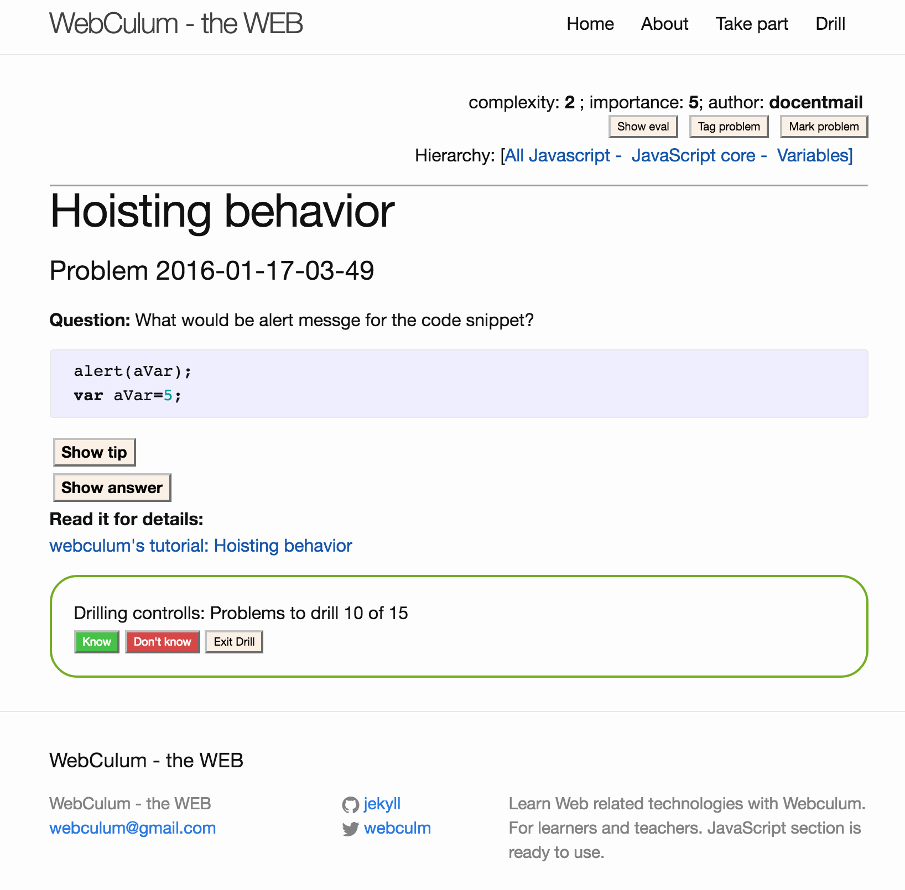
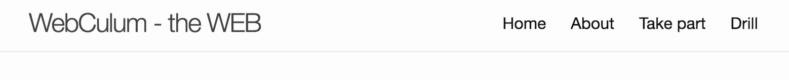
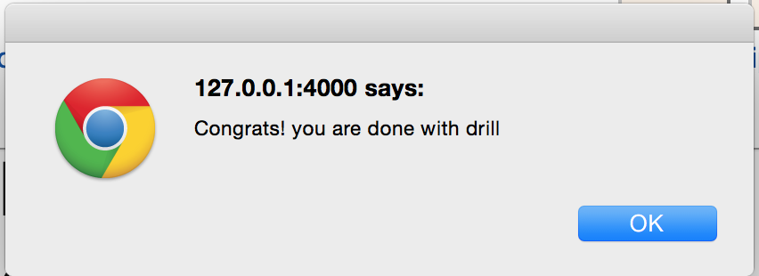

This flow is used to study set of the problems grouped for specific reason. E.g. you teacher would like you to know the specific piece of information that you have to know before your next class.
"Drilling" is the process that help you be sure that you know all the problems of the portion. It is very similar to "Flash Cards". Webculum shows you problem one by one in random order. If you click [know problem] the problem would be excluded from the list.
Your teacher or mentor provides you with the link you can start learning of the portion. The screen looks like
You can review the portion information and click [Start drilling] button to proceed.
You can see screen for the specific problem with the “drilling controls” section.

“Drilling controls” section is shown only for problems that belong to the currently learning portion. If you have left the “drilling flow” (e.g. by clicking Home or any other link) you can return back and proceed with the portion by clicking of "Drill" item of top level menu

Problems to drill 10 of 15 – means that initially were 15 problems to work with and now 10 problems remain only.
Button: [Know] – marks current problem as known, excludes it from the list and proceeds to the next problem;
Button: [Don't know] – is intended to be clicked if you couldn't answer the question before look at Tip or Answer. It preserves problem in the list and proceeds to the next problem. Current problem would be shown later again;
Button: [Exit Drill] – Stop the process of learning of the portion and clean out all related information.
You will see alert like after you will mark as known all problems of the portion

Enjoy,
webculum.org team